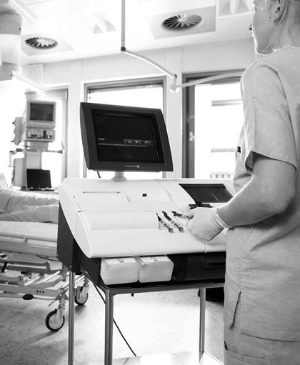

Abl800 flex
Analizador multiperfil de alto rendimiento

DESCRIPCIÓN:
La serie de analizadores ABL800 FLEX cuenta con 20 configuraciones disponibles para medición de pH, gases en sangre, co-oximetría, electrólitos y metabolitos. Con base en su diseño modular están preparados para crecer de una configuración inicial a otra de mayor capacidad e incorporar futuros desarrollos. Se presentan las características del analizador más completo.
CARACTERÍSTICAS:
Tecnología de vanguardia en dispositivos de medición, óptica, electrónica e informática. Preparado para crecer a nuevos parámetros y funciones.
Facilidad de uso y automatización de procedimientos: Pantalla sensible al tacto con mensajes en español, ingreso de muestras y controles a manos libres, identificación de insumos y muestras mediante código de barras, ayuda en línea mediante videos multimedia y más.
“1st Automatic” es un sistema que automatiza y simplifica el proceso en sólo tres pasos: toma de muestra, leer códigos de barras y colocar la muestra en el analizador... ¿Cómo?, vea un video demostrativo en www.radiometer.com/1st.
Exactitud sin precedentes en las mediciones: Sin interferencia por sustancias comúnmente presentes como paracetamol, bilirrubina, ácido ascórbico, ácido acetilsalicílico, cardio green, hemoglobina fetal y creatina.
Acepta micromuestras de 125 µl para medir 18 parámetros, y si la muestra obtenida es menor, puede usar FLEX-MODE de manera que se reporte la mayor cantidad de parámetros posible; idóneo para recién nacidos de bajo peso.
Programa de control de calidad con cálculos estadísticos y gráficas de Levey-Jennings. Disponibilidad de controles acuosos en cuatro niveles y carrusel de alimentación automática para 20 ampolletas a través de la entrada de muestra.
Programa de almacenamiento y base de datos de estudios realizados con capacidad para 2,000 resultados de paciente, 1,000 reportes de calibración, 1,500 controles de calidad y 5,000 eventos de servicio, así como operación remota desde una computadora o red informática.
Programa interpretativo con reporte impreso o en pantalla del gráfico ácido-base de Siggaard Andersen. El reporte permite evaluar rápidamente los efectos del tratamiento en el estado del paciente.
ESPECIFICACIONES TÉCNICAS:
Principio de funcionamiento: Ion selectivo, espectrofotómetro con análisis de 128 longitudes de onda.
Plataforma: Intel Celeron Processor, 128 MB RAM, disco duro, pantalla táctil en color TFA 10.4" VGA, lector de código de barras integrado, salida serie RS232 puerto ethernet RJ45, puertos opcionales para ratón y teclado, 3 puertos USB. Windows XP Embedded, Sybase, Vx Works.
Parámetros medidos: pH, pO2, pCO2, ctHb, sO2, FO2Hb, FCOHb, FMetHb, FHHb, FHbF, cK+, cNa+, cCa2+, cCl-, cGlucosa, cLactato, cBilirrubina y cCreatinina, además de presión barométrica.
Parámetros calculados: Más de 45 parámetros incluyendo Hct, cHCO3, sO2, p50, pO2(x), Anion Gap, FShunt, índice respiratorio y gasto cardiaco.
Volumen de muestra para perfil completo: En modo jeringa 250 µl, en modo capilar 125 µl.
Tiempo de procesamiento: 100 segundos por muestra de perfil de 18 parámetros.
Capacidad de trabajo: Hasta 21 muestras de perfil de 18 parámetros por hora.
Tipo de muestras: Capilar, tubo o jeringa. Sangre total (arterial, venosa, mezclada o capilar), otros fluidos o aire exhalado.
Entrada de muestra: Por aspiración a través de una aguja móvil. La jeringa o capilar se sujetan solos en la entrada y el equipo aspira de forma automática el volumen requerido. La entrada se puede quitar fácilmente para ser lavada o reemplazada. Con “1st Automatic” se pueden formar hasta tres muestras que son premezcladas e identificadas de manera automática.
Lenguaje de reportes y programa: Español.
Conectividad:
Acceso a red de área local para copia de seguridad usando sistema operativo* de protocolos de salida.
* Red con soporte de Windows XP.
• Nivel alto: ASTM, HL7, POCT IA.
• Nivel bajo: ASTM, Raw.
• Capa de transporte TCP/IP, RS232.
• Disponible en varias modalidades: venta, renta, comodato.
• Contamos con servicios de capacitación, mantenimiento preventivo, mantenimiento correctivo, actualización tecnológica y control de calidad externo.
• Disponibilidad de soluciones, gases de calibración, controles de calidad, capilares y jeringas heparinizadas, papel, programas y accesorios.
Registro: 2460E2011 SSA
DATOS COMPLEMENTARIOS: Para mayor información comunicarse a:
GRUPO Eólica, S.A. DE C.V.
|
Teléfono: (55) 5584-4699 |
|